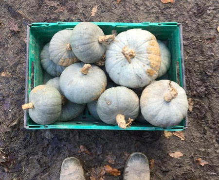

<!DOCTYPE html>
<html>
    <head>
        <title>Sustainable Food Trust</title>
        <link href="css/styles.css" type="text/css" rel="stylesheet" />
        <link href="https://fonts.googleapis.com/css?family=Courgette|Red+Hat+Text:700&display=swap" rel="stylesheet">
        <link rel="stylesheet" href="https://use.fontawesome.com/releases/v5.4.1/css/all.css" integrity="sha384-5sAR7xN1Nv6T6+dT2mhtzEpVJvfS3NScPQTrOxhwjIuvcA67KV2R5Jz6kr4abQsz" crossorigin="anonymous">
    </head>
</html>
<body>
    <header id="topline">
        <h1>David McKenzie</h1>
        <p class="sub-title">Freelance Food Writer & Farmhand</p>
        <a href="https://twitter.com/eatsnleaves"><i class="fab fa-twitter"></i></a>
        <a href="https://www.instagram.com/eatsnleaves/"><i class="fab fa-instagram"></i></a>
    </header>
    <header>
        <nav class="top-nav">
            <a href="index.html">Home</a>
            <a href="contemporary-food-lab.html">Contemporary Food Lab</a>
            <a href="slow-food.html">Slow Food</a>
            <a class="current" href="sustainable-food-trust.html">Sustainable Food Trust</a>
            <a href="13-ways.html">13 Ways</a>
            <a href="farmhand.html">Farmhand</a>
            <a href="contact.html">Contact</a>
        </nav>
    </header>
    <section class="pg-title">
        <h2>Sustainable Food Trust</h2>
        
        <p>The Sustainable Food Trust is a UK-based organisation dedicated to encouraging a faster transition to food and farming systems that are better for the health of people and the planet. They do this through active policy and politcal work, informed by a high degree of hands-on knowledge and understanding derived from their network of producers.<br>I believe it is a crucial platform for giving the general public a clearer idea of what different means of food production actually look like, and that things aren't always as black and white as wide-swathe trends and sweeping statements make them seem.</p>
    </section>
    </section>
        <section class="article-list">
            <article>
                
                <a href="https://sustainablefoodtrust.org/articles/what-makes-a-sustainable-christmas-dinner-the-ecological-footprint-of-festive-feasting/" class="article-title">Lab-made Meat is Here: Are We Going to Eat It?</a>
                <p class="pub-title">Sustainable Food Trust</p>
                <p>There are very few other times of the year when arguments over what we should be eating are brought so vehemently to the table as at Christmas. Looking at the history of why we (particularly Brits) eat certain things at Christmas, as well as a future of what we should or could be eating instead.</p>
            </article>
            <article>
                
                <a href="https://sustainablefoodtrust.org/articles/how-eating-heritage-barley-could-be-a-useful-weapon-in-the-fight-against-climate-change/" class="article-title">FareShare: A New Model for Fighting Food Waste</a>
                <p class="pub-title">Sustainable Food Trust</p>
                <p>Overlooked for centuries in favour of wheat, old types of barley may be part of an inspiring answer to some big problems surrounding human health, environment, and food production.</p>
            </article>
    <footer>
        <p>&copy; David McKenzie 2019</p>
    </footer>
</body>
